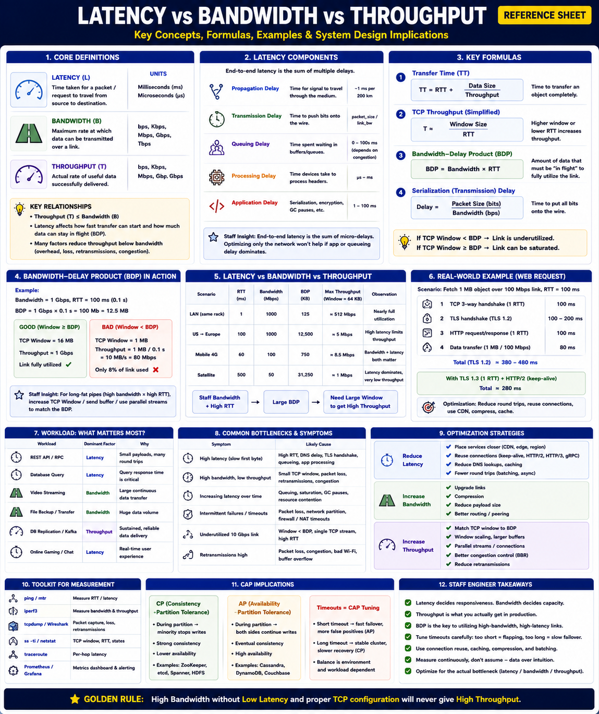

Staff Engineer Reference — Networking & Performance
Almost every performance issue in distributed systems comes down to one (or more) of these three factors:
How quickly data starts moving — time to first byte.
How much data the network can carry — pipe capacity.
How much useful data is actually transferred — effective rate.
Time for a packet/request to travel from source to destination. Measured in ms or µs. Answers: "How long until the first byte arrives?"
| Environment | RTT |
|---|---|
| Same Rack | < 1 ms |
| Same Datacenter | 1–2 ms |
| Same Region | 5–20 ms |
| Cross Region | 30–80 ms |
| India ↔ US | 150–200 ms |
| GEO Satellite | 500–700 ms |
Dominated by: REST APIs, RPCs, DB queries, leader election, lock acquisition, auth.
Maximum data a link can transmit per second. Measured in Mbps/Gbps/Tbps. Answers: "How wide is the pipe?"
Dominated by: Video streaming, backups, ML dataset copies, replication, file transfers.
Actual useful data successfully delivered. Always ≤ bandwidth. Answers: "How much data is actually flowing?"
Dominated by: DB replication, Kafka replication, bulk data transfer.
Formula 1 — Transfer Time
Formula 2 — TCP Throughput (approximate)
Larger windows and lower RTT increase throughput. Small windows on high-RTT links severely limit performance.
Formula 3 — Bandwidth-Delay Product (BDP) ⭐
BDP represents the amount of data that must be "in flight" to fully utilize a network link.
tcp_window_scaling) and tune net.core.rmem_max and net.core.wmem_max.Latency vs Bandwidth for small requests
| Link | RTT | Bandwidth | 1 KB request time |
|---|---|---|---|
| A | 1 ms | 100 Mbps | ≈ 1 ms (RTT dominates) |
| B | 100 ms | 10 Gbps | ≈ 100 ms (RTT dominates) |
For a 1 KB request, both complete in roughly ≈ RTT. Bandwidth barely matters. Latency dominates for small payloads.
Bandwidth vs Throughput
| Workload | Dominated By |
|---|---|
| REST API / gRPC / DB Query | Latency |
| Search / Authentication / RPCs | Latency |
| Video Streaming / Backup | Bandwidth |
| ML Dataset Copy / Object Storage | Bandwidth |
| DB Replication / Kafka Replication | Throughput |
| Bulk data transfer over long distances | Throughput (BDP) |
Example 1 — API Call
Example 2 — Video Upload
Example 3 — Cross-Region Replication
Reduce Latency
Increase Bandwidth
Increase Throughput
| Region | Bottleneck | Optimization |
|---|---|---|
| Latency-bound | High RTT | Reduce round trips, use CDN, async |
| Bandwidth-bound | Link capacity | Upgrade links, compress, reduce payload |
| Throughput-bound | TCP/Protocol overhead | Tune BDP, window scaling, batching |
| Symptom | Likely Cause |
|---|---|
| Slow API responses | High latency |
| Slow file upload/download | Low bandwidth |
| Poor replication speed | Low throughput |
| High RTT readings | Network distance or congestion |
| High packet loss | Reduces throughput via retransmissions |
| Underutilized 10 Gbps link | TCP window too small (BDP mismatch) |
| High P99 latency | Queuing delay + tail latency |
| Tool | Measures |
|---|---|
ping | RTT / Latency |
traceroute | Per-hop latency |
iperf3 | Bandwidth & Throughput (use -w to set window) |
tcpdump | Packet loss & retransmissions |
Wireshark | End-to-end network behavior |
ss -ti | TCP window size, RTT, retransmits per socket |
netstat -s | Retransmission counters |
| Prometheus/Grafana | Latency histograms, throughput, utilization |
| System | Primary Concern | Recommended Optimization |
|---|---|---|
| REST API | Latency | Keep-Alive, HTTP/2, caching, fewer RTTs |
| CDN | Latency | Edge deployment, TLS session resumption |
| Object Storage | Bandwidth | Compression, multipart uploads, parallel streams |
| Database Replication | Throughput | Window scaling, batch writes, dedicated link |
| Kafka | Throughput | Larger batches, compression, linger.ms |
| Video Streaming | Bandwidth | Adaptive bitrate, CDN, compression |
| Global Search | Latency | Regional replicas, local index shards |
| Optimization | Improves | Trade-off |
|---|---|---|
| Reduce RTT (edge, CDN) | Latency | More infrastructure cost |
| Upgrade links | Bandwidth | Higher cost |
| TCP Window Scaling + larger buffers | Throughput | Higher memory usage per connection |
| Connection reuse (Keep-Alive) | Latency | More open sockets, idle FD usage |
| Compression (gzip/zstd) | Bandwidth + Throughput | Higher CPU usage |
| Batching | Throughput | Increased end-to-end latency per item |
| Level | Thinking Pattern |
|---|---|
| Junior | "Our API is slow. We need more bandwidth." |
| Senior | "I'll profile the request. If the payload is small, it's latency — I'll add caching and keep-alive. If the payload is large, it's bandwidth — I'll add compression." |
| Staff | "I first classify the bottleneck: for API calls (≤ 100 KB), it's almost always latency — I reduce round trips via HTTP/2, connection reuse, and edge caching. For bulk transfers (≥ 10 MB), I check bandwidth utilization and throughput. If utilization is high but throughput is low, I check packet loss and retransmissions. For cross-region replication, I compute BDP = bandwidth × RTT and verify TCP window ≥ BDP, tuning net.core.rmem_max and wmem_max accordingly. I always quantify with iperf3 and ss -ti before recommending changes, and validate improvements with P50/P95/P99 latency and throughput metrics." |
